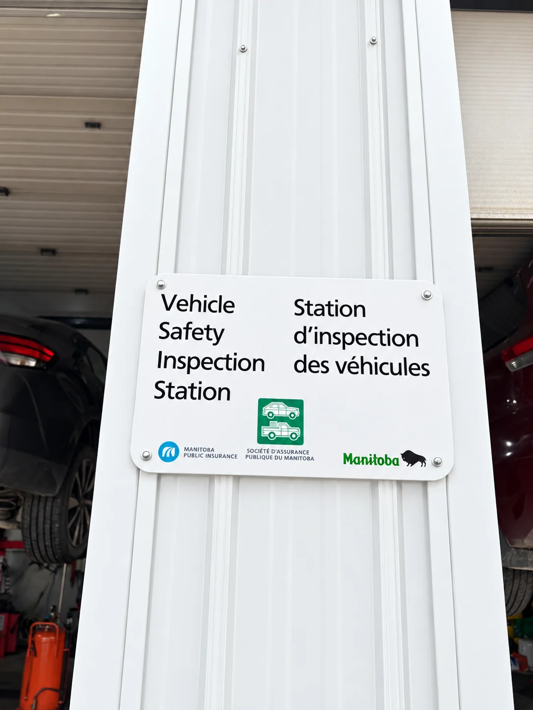
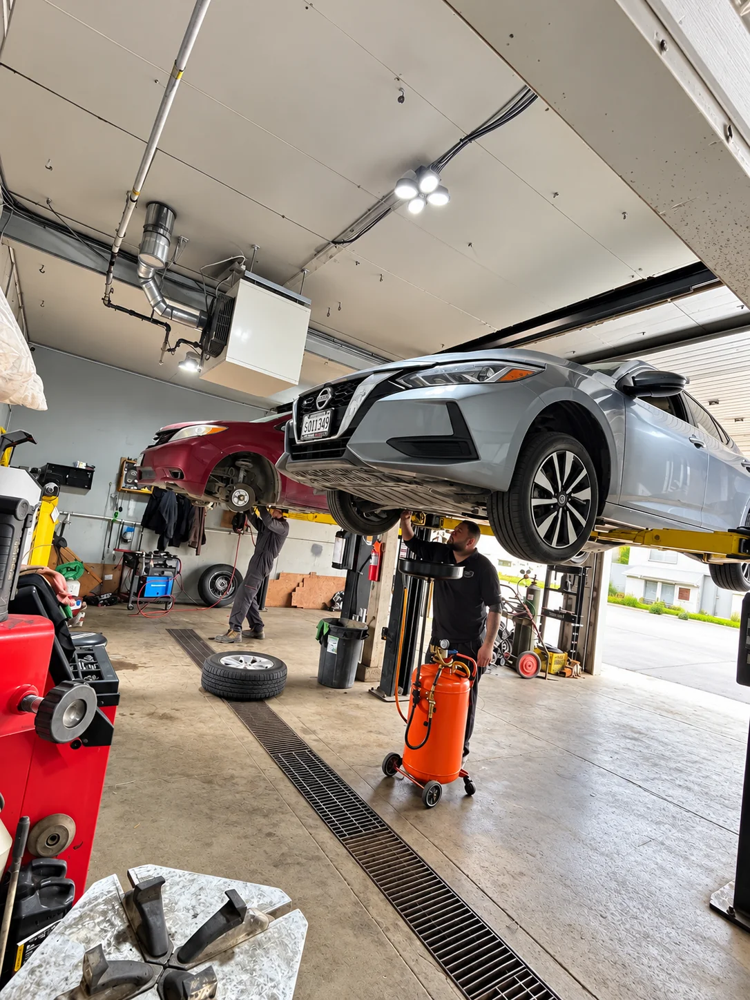
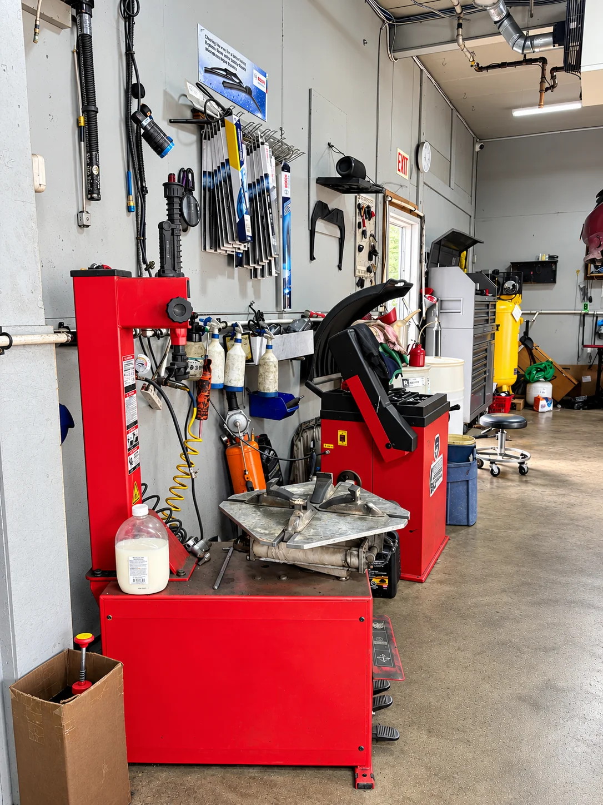
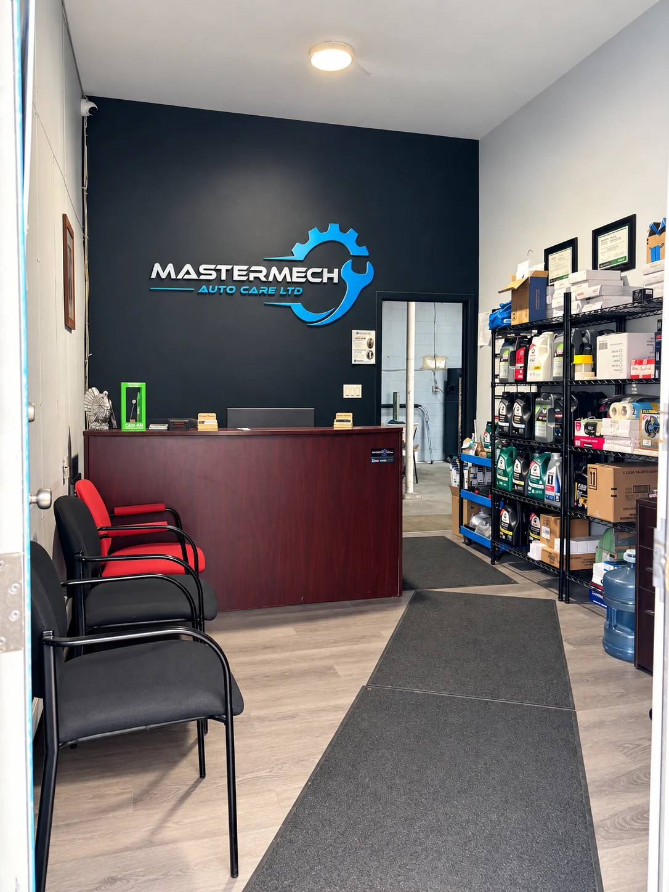
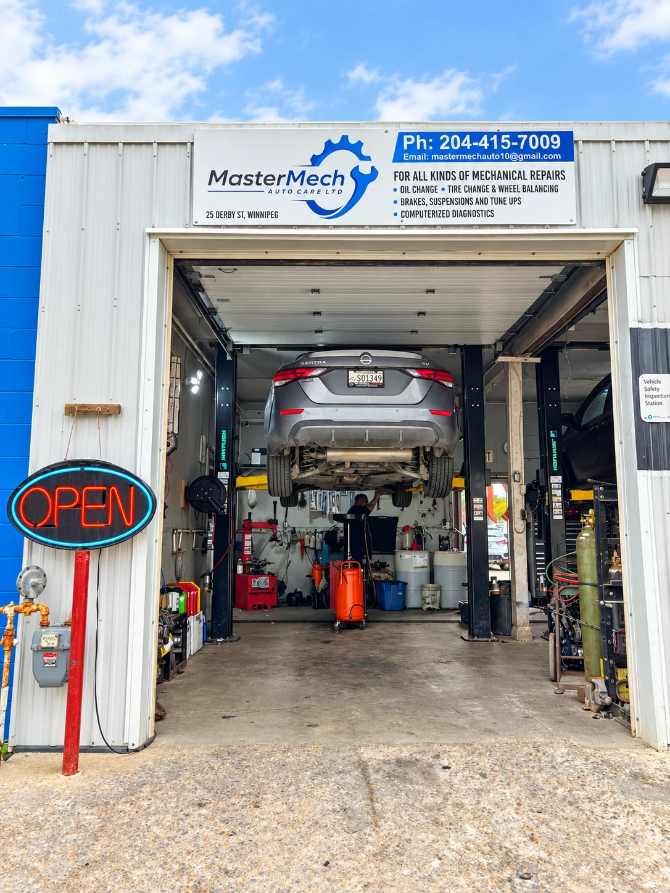

MPI Safety Inspections
Need a vehicle safety inspection? Visit our MPI-certified Winnipeg inspection station. We’ll explain the inspection results and any repairs needed.
Explore MPI safety inspections →From a $70 full synthetic oil change to a brake repair or MPI safety inspection, get the help your vehicle needs at MasterMech Auto Care. Visit our local shop at 25 Derby St or call to discuss your repair.
Due for maintenance, hearing a new noise or seeing a warning light? Explore our Winnipeg auto services, then tell us your vehicle’s make, model and what needs attention.

Need a vehicle safety inspection? Visit our MPI-certified Winnipeg inspection station. We’ll explain the inspection results and any repairs needed.
Explore MPI safety inspections →
Squealing brakes, grinding or vibration when stopping? Get your brakes inspected and discuss pad, rotor or other brake repairs before work begins.
Explore brake repair →
Get ready for the next season with tire changes, rotations and balancing. If you notice uneven wear or vibration, ask us to check your tires.
Explore tire services →
Keep up with engine maintenance for $70, including full synthetic oil, an oil filter and labour. No appointment needed—drive in for an oil change.
See our oil change offer →Clunks over bumps, a rough ride or pulling to one side? We inspect steering and suspension components and explain the recommended repairs.
Explore suspension repair →
Check-engine light or a vehicle that isn’t running right? We investigate the problem and discuss repair options, including electrical and mechanical work.
Explore diagnostics & repairs →Send your make, model and the service you need—or describe the noise, warning light or problem you’ve noticed. Our Winnipeg shop can help you work out the next step.
For current availability or an urgent question, call 204-415-7009.
An inquiry does not confirm an appointment or a repair price. The shop will contact you to discuss the next step.
Includes full synthetic oil, oil filter and labour. No appointment needed — just drive in.
You want to know what needs fixing, why it matters and what it will cost. At MasterMech, we explain our recommendations and discuss pricing before work begins. Bring your vehicle to one Winnipeg shop for routine maintenance, safety inspections and mechanical repairs.
Choosing an auto repair shop? Read what customers have shared about their visits to MasterMech Auto Care on Google.
Read our reviews on GoogleYou can drive in for many everyday services, including our oil change offer. For repairs or an MPI safety inspection, call 204-415-7009 to confirm availability before your visit.
Yes. MasterMech is an MPI-certified vehicle safety inspection station at 25 Derby St in Winnipeg. Call to discuss your vehicle and arrange an inspection.
The $70 offer includes full synthetic oil, an oil filter and labour.
Our Winnipeg shop provides brake inspections and repairs, tire changes and balancing, steering and suspension repairs, check-engine diagnostics, tune-ups and general mechanical repairs. Choose a service above for more details.
Winnipeg, MB R2W 5K9. Call to check availability or discuss what your vehicle needs before you head over.
Phone: 204-415-7009
Email: mastermechauto10@gmail.com
Holiday hours may vary. Call ahead to confirm.